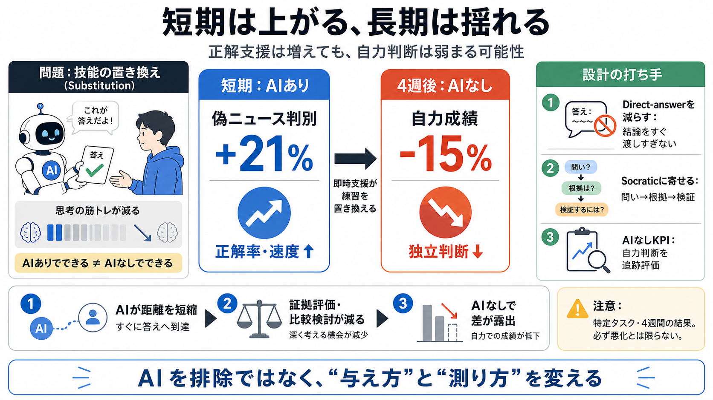

The consequences of relying on AI for accurate news | MIT News | Massachusetts Institute of Technology
Fast Companyreporter Jude Cramer spotlights a new study by MIT researchers that finds individuals who rely on AI to veri…

偽物ニュース判別の実験で見えた「正解は増えても、自力判断は弱まる」可能性を、要点だけで整理します。
（Substitution / 置き換え）
AIが「その場の正解」を助けると成績は伸びますが、その過程で必要な思考練習が減り得ます。
その結果、AIなし時の判断力が落ちる（技能の置き換え）ことがあります。
MIT研究では、偽ニュース判別でチャットボット支援が開始直後は精度を21%向上させました。
しかし4週目（AIなしで判定）では、ベースラインより15%悪化していました。
AIが結論を渡すと、筋トレ（証拠評価・比較検討）の回数が減り得ます。
その結果、今日の勝利はあっても、明日の自力は弱まることがあります。
AIの出し方は一様ではありません。
結論を直接教えるdirect-answer と、問いで考えさせるSocratic questioningで、学習・依存の質が変わり得ます。
約4分の1の参加者が「できるようになった」と感じた一方で、自力成績は落ちていました。
満足度や自信（メタ認知的評価）が、実能力の代理指標になり得るのが問題です。
入力データが示す筋は「即時の回答が、証拠評価や比較検討といった独立思考の反復を減らす」ことです。
つまり“正解への最短経路”が、学習経路を置き換える可能性があります。
この結果は、ニュース判別という特定タスク・4週間という条件に限られます。
効果の持続期間や、他領域でも同様に起きるかは未確定です。
重要なのは「AIが役立つか」だけでなく、「AIなしで能力が維持されるか」です。
導入や教育設計では、評価にもAIなし条件を含めるべきです。
結論をそのまま提示し続ける代わりに、ユーザーが辿り着く練習（段階的推論・根拠比較）を残します。
そして満足度ではなく、AIなし性能をKPIに入れます。
この研究が言うのは「AIを使うと必ず悪化」ではなく、答え提示が学習を置き換える設計リスクだという警鐘です。
開発者は、AIありの気持ちよさだけでなくAIなし能力の維持を検証すべきです。
以下は、今回の要約に基づく「研究概要・論点」の参照先カテゴリです（原文リンクは入力に未提示のため、研究名の特定はできません）。必要なら、論文URL/正式名称を教えてください。
Fast Companyreporter Jude Cramer spotlights a new study by MIT researchers that finds individuals who rely on AI to veri…
Valdemar Danry, the study’s other co-lead author, suggested AI conversations based in the Socratic method—interactions w…
## Dialogues with AI Reduce Beliefs in Misinformation but Build No Lasting Discernment Skills Anku Rani, Valdemar Danry…
Comparative studies examining different AI pedagogical approaches — particularly Socratic questioning methods that promp…
very authoritative answer very long and complete etc. And we have been experimenting with AI systems that uh for example…